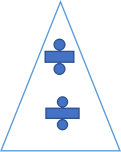

Quiz
1. Garis k dengan persamaan 2x-3y+4=0 ditranslasi denga matriks translasi T(-1,-3). Tentukan bayangan garis k tersebut!
2. Gambar berikut merupakan contoh batik motif tumpal, translasikanlah gambar tersebut dengan matriks translasi sesuai keinginan anda. Lakukanlah eksplorasi ini di kertas millimeter block. Happy trying!
